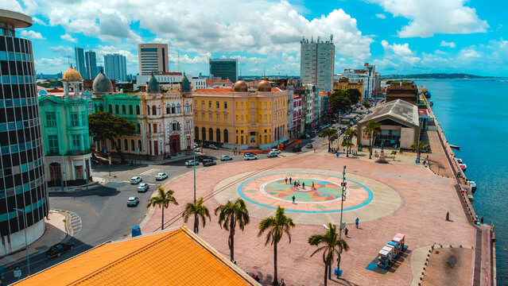

Marco Zero
O que é o Marco Zero?
O Marco Zero é um monumento geográfico localizado na Praça da Sé e tem o formato hexagonal, com cada um dos seus lados apontando para uma região. É a partir do Marco Zero que se conta a numeração de todas as ruas da cidade e a quilometragem de todas as rodovias do Estado.
O que tem no Marco Zero?
Praça do Marco Zero - O que saber antes de ir (ATUALIZADO 2024)
É o primeiro lugar a se visitar em Recife. Tem a "Torre de Cristal', ícone da cidade. Tem museus e uma galeria com bares e restaurantes logo ao lado. Também tem o centro de artesanato, onde você pode comprar lembranças para sua viagem.
